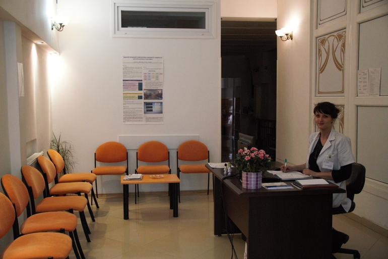
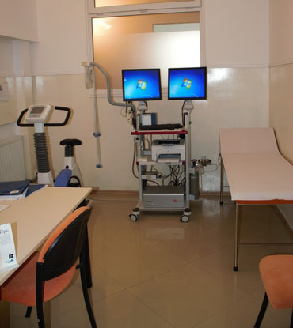
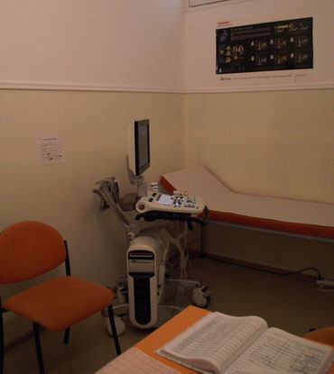

Despre noi
Recuperare cardio-vasculara este ansamblul activitatilor
necesare pentru a influenta favorabil starea dumneavoastra de sanatate si care asigura
pacientilor cea mai buna conditie fizica, mentala si sociala pentru ca prin propriile lor
eforturi sa poata pastra sau recupera un loc cat mai adecvat in viata comunitatii.
Organizatia Mondiala a Sanatatii
Recuperarea pacientilor cu boli cardio-vasculare nu se refera numai la ameliorarea fortei musculare ci si la scaderea riscului cardiovascular prin includerea intr-un program de reabilitare complex (ce cuprinde antrenamentul fizic - kinetoterapia si cursuri de combatere a factorilor de risc) care urmareste diminuarea semnificativa a complicatiilor atat pe termen scurt cat si pe termen lung.

Ne adresam:
- pacientilor care au risc inalt de a dezvolta o boala cardio-vasculara: diabetici, obezi, hipertensivi (in preventie primara)
- pacientilor deja diagnosticati cu una din urmatoarele afectiuni (in preventie secundara):
- Cardiopatie Ischemica
- infarct miocardic
- post implantare de stent coronarian
- dupa bypass aortocoronarian
- pacienti cu angina pectorala de efort (revascularizare incompleta sau nerevascularizabili)
- Postoperator dupa inlocuire valvulara sau interventii chirurgicale pentru boli congenitale
- Post Transplant Cardiac
- Insuficienta Cardiaca
- Preoperator - pregatire pentru interventie chirurgicala
- Post Accident Vascular Cerebral (in absenta sechelelor neuromusculare severe)
Programari:
Informatii suplimentare:
medicinacluj.roObiective si Servicii
- ♥ reintegrarea socio-profesionala si reluarea in conditii de siguranta a activitatilor cotidiene
- ♥ evitarea recidivelor si informarea asupra patologiei si tratamentului dumneavoastra
Recuperare cardiovasculara:
- ♥ antrenament pe bicicleta ergometrica cu program conceput si supravegheat de catre cardiologi.
- ♥ programul este personalizat si include monitorizare ECG continua
- ♥ gimnastica medicala cu personal specializat in kinetoterapie
- ♥ cursuri de informare individuala si colectiva cu sfaturi nutritionale si de combatere a factorilor de risc cardio-vasculari
- ♥ consultatie individuala cu medic nutritionist
Consultatii si explorari neinvazive in cardiologie:
- ♥ consultatii de specialitate ECG repaus
- ♥ testare de efort - bicicleta ergometrica
- ♥ ecocardiografie + doppler color
- ♥ ecografie doppler vascular si arterial
- ♥ test de efort cu spirometrie, eco doppler transcranian, monitorizare Holter EKG si MAPA
Aparatura
- ♥ Electrocardiograf Schiller AT 104/CS200 - pentru ECG de repaus in 12 derivatii
- ♥ Biciclete ergometrice ergoline - de capacitate inalta, controlate de calculator ce opereaza intr-un interval de sarcina de 20-999 Watt.
- ♥ Defibrilator automat extern Fred-easy-SCHILLER
- ♥ Aparat de testare pentru efort: bicicleta ergometrica, SCHILLER AT104 Ergospiro PWC 8,5 HSR1; CS200 Ergospiro PWC 8,5 HSR1.
- ♥ Statie de monitorizare centrala schiller - Ergoline Reha System, ERGOSELECT 200K Reha versiune 2,5; 5 aprilie 2011 cu program de inregistrare ECG continua, detectarea stimularii cardiace, program de gestionare a datelor, inregistrarea evenimentelor privind ritmul cardiac / Calculator PENTIUM Harddisk
- ♥ Ecograf: General Electric VIVID S5 (2011) cu sonda 3S pentru ecocardiografie (explorare ultrasonografica Doppler color, pulsat) si sonda 8L liniara pentru explorare ultrasonografica - Doppler arterial si venos.


Echipa
- Dr. Sorina Răduțiu - medic coordonator - medic primar cardiolog (vizualizează CV)
- Conf. Dr. Daniela Bedeleanu - medic primar cardiolog
- Dr. Radu Hagiu - medic primar cardiolog
- Dr. Theodor Cebotaru - medic primar chirurgie cardiovasculară
- Dr. Calin Popa - medic primar chirurgie cardiovasculară
- Dr. Svetlana Turca - medic primar cardiolog
- Dr. Horațiu Cadiș - medic primar cardiolog
- Dr. Isabella Mihalcea - medic specialist cardiolog
- Dr. Alina-Elena Lupșe - medic specialist cardiolog
- Dr. Bocea Adrian - medic specialist cardiolog
- Dr. Cristiana Ciortea - medic primar radiolog
- Dr. Mădălina Băcilă - medic oftalmolog - compententa doppler transcranian
- Dr. Ligia Cebotaru - medic primar oncologie
- Dr. Lăcrămioara Moldovan - medic primar diabetologie/endocrinologie
Informatii suplimentare
Criterii internare pacient
Drepturile si obligatiile pacientilor
Recuperarea activa a pacientului
Listele furnizorilor
Regulile de igiena personala
Date solicitate programare consult
Tarife investigatii C.A.S. si privat
Educatia sanitara si preventiva
Asistenta medicala ambulatorie si paraclinic
Politica de supraveghere video COVID-19-Materiale informative de educație sanitară și prevenție
Regulile de comportament ale apartinatorilor
Regulile de comportament ale pacientilor
Protectia datelor
Temele de cercetare
Purtatorul de cuvant
Diagnosticul si mijloacele de terapie a durerii
CAS Afisare pachet servicii clinice
Lista afectiunilor pe spitalizare de zi
INFORMARE-colectare medicamente expirate
Recardio pune la dispozitia dumneavoastra:
- Interpret mimico-gestual pentru pacientii cu deficit de auz si vorbire
- Translator autorizat pentru pacientii care nu sunt vorbitori de limba romana
- Indrumarea catre asociatie de asistenta sociala si ingrijiri la domiciliu (inclusiv îngrijire paliativă)
- Consiliere spirituala